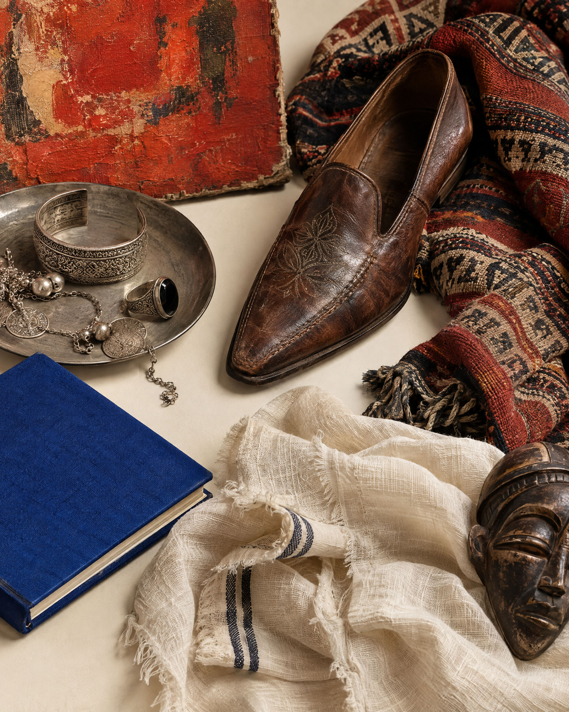
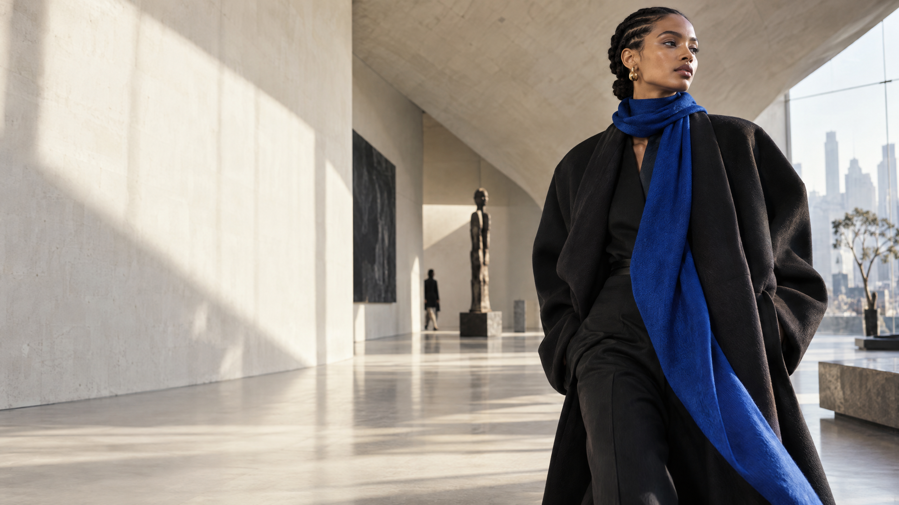
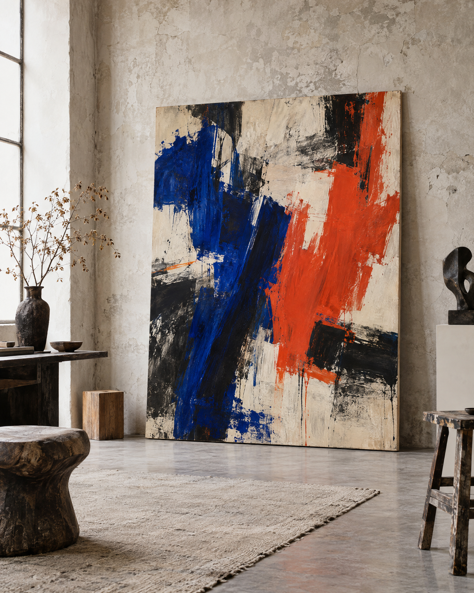

Index 01風格無國界 Style has no passport
Issue No. 05 — The Art of Getting Dressed
穿著，
是一種觀看。
一份以時尚為主、以藝術為靈感的國際風格誌。從首爾到巴黎、拉各斯到台北，觀察我們如何穿衣，也如何看世界。
Readthe issue↘

Cover story / Across the frame01 / 05
A / S
GLOBAL STYLE ATLAS
GLOBAL STYLE ATLAS
01 / Editor's letter
This is not a trend report.
我們談的不是「流行」，
而是風格為何有生命。
一件外套可以來自首爾的剪裁語彙，一個色彩可能源於拉各斯的街景，一幅畫則讓我們重新理解身體與空間的關係。
閱讀本期索引 ↓Style Index / 01—03
本期風格索引
不是複製一種風格。
是找到自己的觀看方式。

Art Note 0203
Seoul / Paris / Lagos
Taipei / Everywhere
Gallery / Curatorial Column
藝廊展覽
把服裝放進展覽空間。
讓觀看成為一種編輯。
“
好的穿搭，
讓你看見自己以外的世界。
— A note on clothes, colour & looking
Notes / Around the world